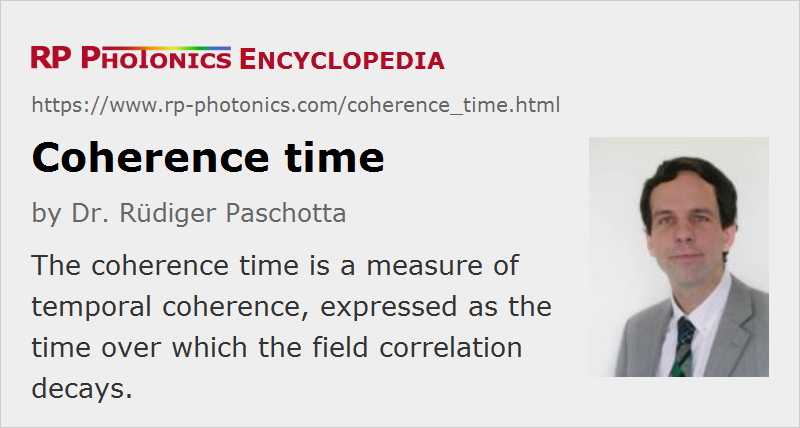

Coherence Time
Definition: a measure of temporal coherence, expressed as the time over which the field correlation decays
German: Kohärenzzeit
Formula symbol: τcoh
Units: s
How to cite the article; suggest additional literature
Author: Dr. Rüdiger Paschotta
The coherence time can be used for quantifying the degree of temporal coherence of light. In coherence theory, it is essentially defined as the time over which the field correlation function decays. For a stationary light field (having constant statistical properties), the complex degree of temporal coherence can be defined as
where E(t) is the complex electric field at a certain location. The complex degree of coherence is 1 for τ = 0 and usually decays monotonically for larger time delays τ. For an arbitrary shape of this function, the coherence time can be defined by
In the case of an exponential coherence decay (as it occurs e.g. for a laser with quantum noise influences only), this is the same as the exponential decay time.
Knowledge of the coherence time (i.e., a single number) can be useful when the shape of the coherence function (or the shape of the Fourier spectrum) is approximately known. Obviously, however, the specification of the coherence time (or the linewidth) alone does not constitute a full characterization of the coherence.
The coherence time is intimately linked with the linewidth of the radiation, i.e., the width of its spectrum. In the case of an exponential coherence decay as above, the optical spectrum has a Lorentzian shape, and the (full width at half-maximum) linewidth is
The constant factor in this equation (here: 1 / π) is in general different for other shapes of the coherence function (e.g. roughly twice as high for a Gaussian shape). Conversely, the linewidth can be used for estimating the coherence time, but the conversion depends on the spectral shape. Many authors state that the bandwidth is just the inverse of the coherence time without referring to any concrete definitions of coherence time and bandwidth, nor to a specific spectral shape. This then simply means that the bandwidth is of the order of the inverse coherence time for typical spectral shapes.
In cases where the frequency noise spectrum is not flat but rises strongly at small noise frequencies, there can be a significant degree of coherence even for time delays well above the inverse linewidth; this issue is important, e.g., in the context of self-heterodyne linewidth measurement.
Instead of the coherence time, it is common to specify the coherence length, which is simply the coherence time times the vacuum velocity of light, and thus also quantifies temporal (rather than spatial) coherence.
Lasers, particularly single-frequency solid-state lasers, can have long coherence times, compared with the duration of an optical cycle; values of several milliseconds are possible. A long coherence time is important for many applications (see the article on coherence).
Questions and Comments from Users
Here you can submit questions and comments. As far as they get accepted by the author, they will appear above this paragraph together with the author’s answer. The author will decide on acceptance based on certain criteria. Essentially, the issue must be of sufficiently broad interest.
Please do not enter personal data here; we would otherwise delete it soon. (See also our privacy declaration.) If you wish to receive personal feedback or consultancy from the author, please contact him e.g. via e-mail.
By submitting the information, you give your consent to the potential publication of your inputs on our website according to our rules. (If you later retract your consent, we will delete those inputs.) As your inputs are first reviewed by the author, they may be published with some delay.
Bibliography
| [1] | B. E. A. Saleh and M. C. Teich, Fundamentals of Photonics, John Wiley & Sons, Inc., New York (1991) |
See also: coherence, coherence length, linewidth, laser speckle
and other articles in the category general optics
|  |
If you like this page, please share the link with your friends and colleagues, e.g. via social media:
These sharing buttons are implemented in a privacy-friendly way!